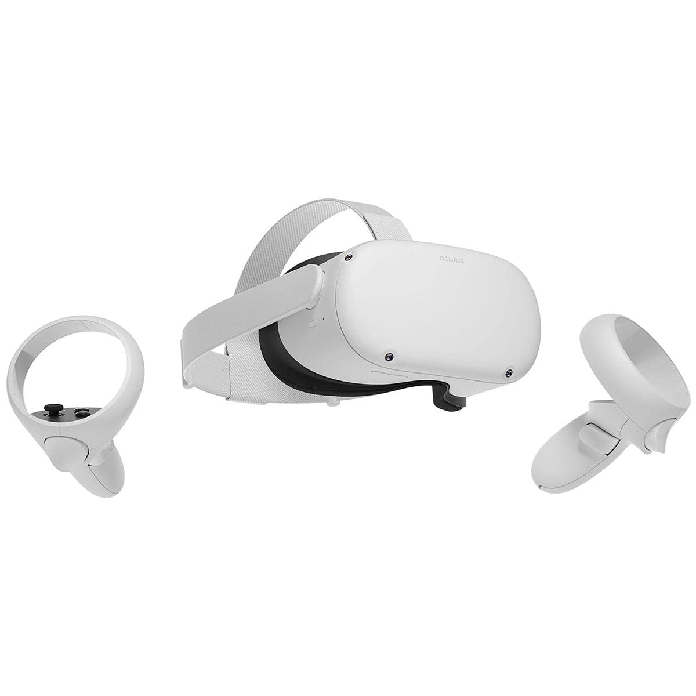
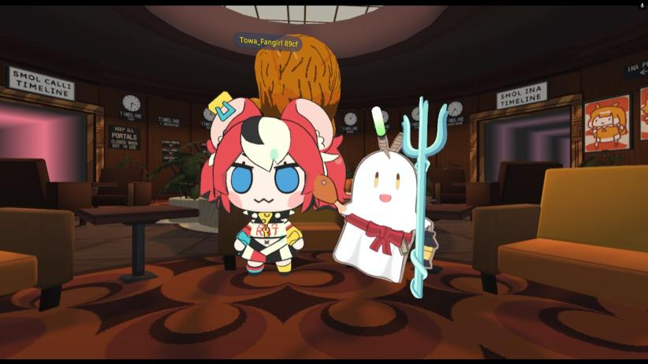

Introducción
la realidad extendida abarca mucho del mundo actual, la realidad extendida o vr tiene muchos tipo de forma de representarse como las que veremos a continuacion
la forma en que se le puede dar uso:
iniciemos con uno de los mas conocidos como los videojuegos en este caso los lentes de vr:
estos son unos lentes el cual como dice arriba son para videojuegos pero, como funcionan? funcionan poniendose en la cabeza y los dos mandos sirven para moverte dentro de la experiencia aqui un video Ejemplo
en este caso este es el famoso videojugo conocido como amongus us tuvo su version para vr pero no es el unico juego vr que hay como ultimo ejemeplo tenemos:
este es otro juego fomoso multijugador muy conocido y famoso dentro de este mundo de los videojuegos de vr donde puedes ser diferentes personajes en este caso unos que veremos a mas profundidad
Desarrollo del tema
La Realidad Extendida permite simular entornos, mejorar la comprensión de datos y ofrecer nuevas experiencias interactivas. Se utiliza en videojuegos, entrenamiento militar, simulaciones médicas, turismo virtual y más.

Temas Relacionados
- Realidad Virtual (VR)
- Realidad Aumentada (AR)
- Realidad Mixta (MR)
- Conciertos Virtuales
- Metaverso
Conclusión
La Realidad Extendida es una tecnología en crecimiento con un impacto importante en diferentes sectores. Su desarrollo continuará abriendo nuevas oportunidades y cambiando la forma en que interactuamos con el mundo digital.